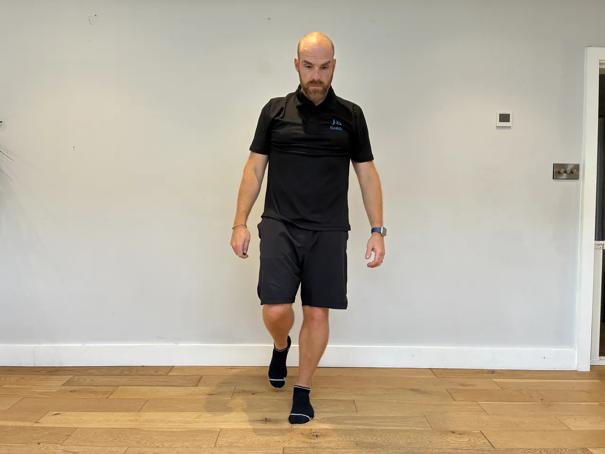
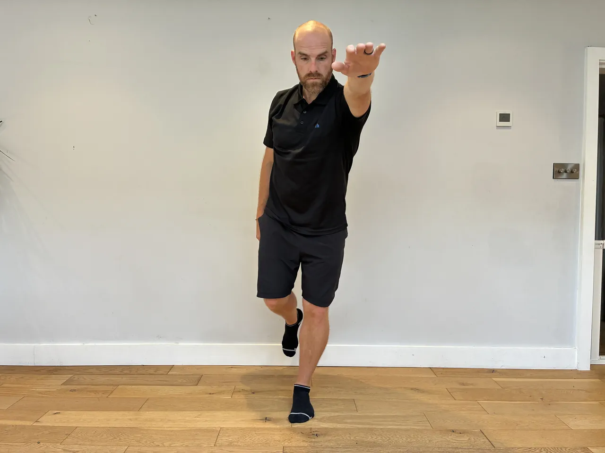
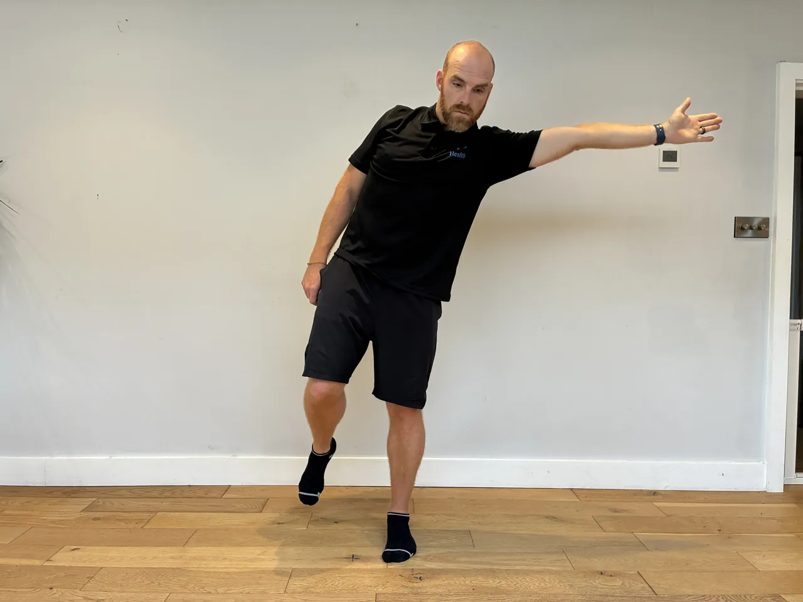
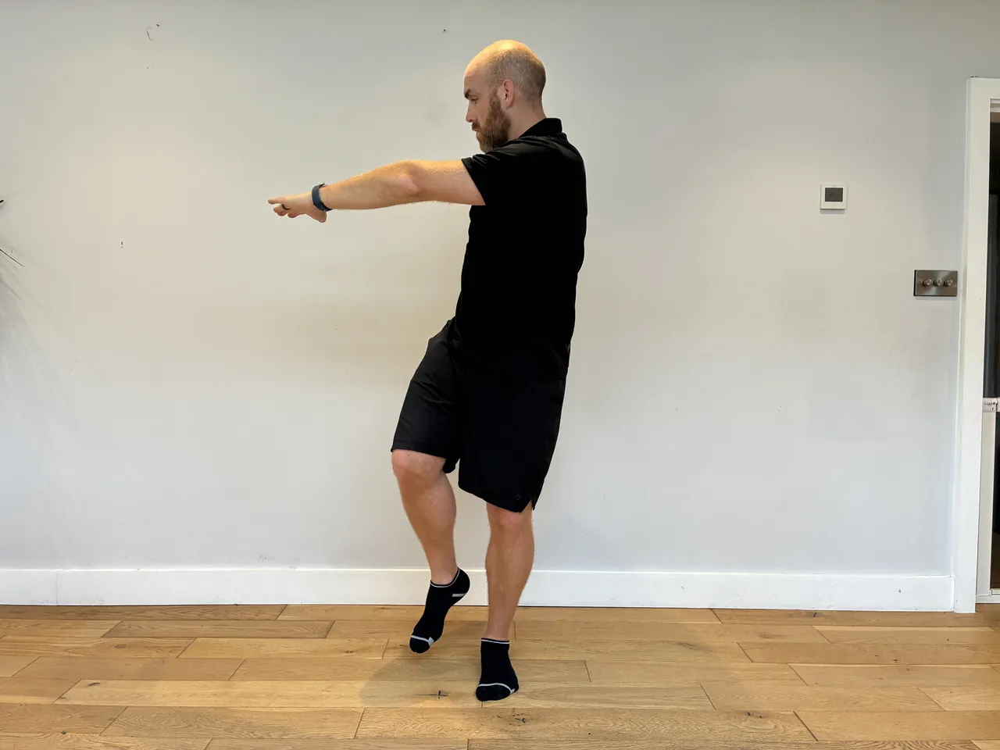
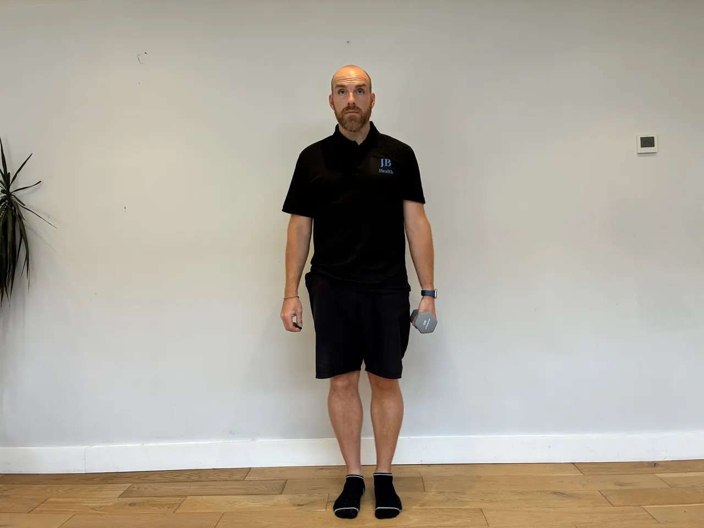
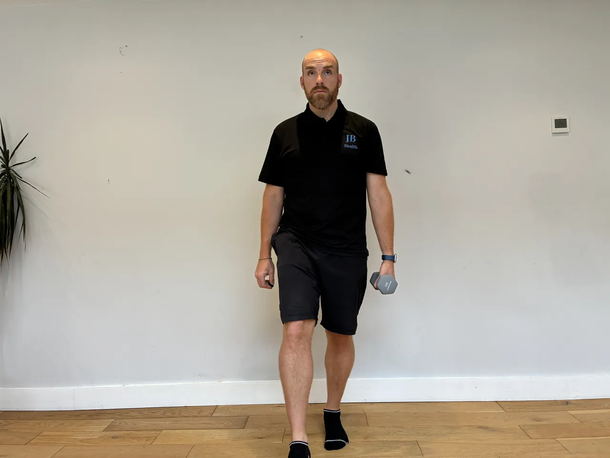

Start: Hold a weight at the chest, feet shoulder-width, toes slightly out.
Movement: Sit down into a squat and, at the bottom, reach the weight forward to help you sit upright, then draw it back to the chest and stand tall.
Focus: Keep the knees in line with the middle toes and the heels down. Use the reach to stay upright rather than tipping forward, and squat only as deep as the knees allow.
Start: Stand tall, feet hip-width, knees soft, hugging a weight to your chest with both arms, core braced.
Movement: Push the hips back and hinge forward with a flat back until the hamstrings load, then drive the hips forward to stand tall.
Focus: The weight sits high on the chest, so the back works hard to stay flat. Hinge at the hips, not the waist, and only go as far as that flat back allows.
Start: Hand and knee on a bench, the other foot planted, a weight in the free hand hanging down, back flat and level.
Movement: Pull the weight towards the hip, driving the elbow back and up, then lower slowly under control.
Focus: Lead with the elbow and squeeze the shoulder blade, keeping the back flat and level, not twisting to lift. Keep the shoulder down, and control the lower.




Start: Stand on one leg, torso tall, other foot lifted, arms ready to reach.
Movement: Reach the arms (and torso if set) out to the sides or forward, challenging balance, then return to centre.
Focus: Keep the hips level and the standing knee soft as you reach, moving slowly. Fix the eyes on a point, keep the core engaged, and return under control.
Start: Lie on your back on the mat, knees bent, a weight in each hand pressed up over the chest.
Movement: Lower one weight until the upper arm rests on the floor, press it back up, then do the other side. Keep alternating.
Focus: The arm held up is working too, so keep it still over the shoulder. Brace so the trunk doesn't roll towards the moving side, and touch the floor gently each rep.
Start: Lie on your back, one knee bent with the foot flat, the other leg extended straight out and held off the floor.
Movement: Drive through the heel of the bent leg to push your hips up until the body is level. Hold two seconds, then lower slowly under control.
Focus: Keep the hips level, don't let the free side drop or twist. Push with the glute, not the lower back, and keep the ribs down.
Start: One foot flat, the other half a step back on its toes. Weight in front of the thighs, soft bend in the front knee.
Movement: Push the hips back and slide the weight down the front leg until the hamstring loads, then drive the hips forward to stand tall. Swap legs halfway.
Focus: Most of the weight sits on the front leg, the back foot is only there for balance. Back flat, hips square, not twisting open.
Start: Feet hip-width, a weight in each hand, palms facing forward. Push the hips back and hinge until the chest is well forward, back flat, arms hanging below the shoulders.
Movement: Pull the weights towards the lower ribs, elbows tight to your sides, then lower under control without standing up.
Focus: The underhand grip keeps the elbows close, so the pull goes lower down the back and brings the biceps in. Hold the hinge still and flat, no bobbing, neck long.


Start: Stand tall with a weight in one hand at the side like a suitcase, feet hip-width, ribs down, core braced.
Movement: Walk forward with controlled steps for the set distance, keeping the torso upright and level.
Focus: Resist the pull towards the weighted side, keeping the shoulders and hips level and the ribs down. Take steady steps, brace hard, and don't let the weight swing.
Start: Stand tall with a weight in each hand at the sides, or standing on a band holding the handles, elbows pinned to the ribs, ribs down, core braced.
Movement: Curl the weights up towards the shoulders, keeping the elbows still, then lower under control.
Focus: Keep the elbows pinned to the sides and don't swing the body to lift. Keep the ribs down, and control the lower rather than dropping.
Start: Stand on one leg holding a weight, soft standing knee, core braced, the other leg ready to trail behind.
Movement: Hinge at the hip and lower the weight as the free leg lifts behind, return to standing, then press the weight overhead. Lower and repeat.
Focus: Keep the back flat and hips level through the hinge, and don't rush the balance. Press with a braced core so the lower back doesn't arch to help the weight up.
Start: Start in an elbow plank, straight line from head to heels, core braced.
Movement: Press up one hand at a time into a hand plank, then lower back onto the elbows one at a time. Keep alternating the leading arm.
Focus: Keep the hips level and square throughout, resisting the twist as each arm moves. Keep the ribs down and the core braced, and don't let the hips sag as you change levels.
Start: Stand with feet hip to shoulder-width, holding the ViPR vertically on one end with both hands, arms relaxed, core braced.
Movement: Squat to a comfortable depth while keeping the ViPR balanced vertical, then drive up through the heels. Keep it steady throughout.
Focus: Balance the tool upright as you squat so the challenge is control, not load. Keep the chest tall, keep the knees in line with the middle toes, and move slowly so the balance demand stays high.
Start: Hold a kettlebell upside down by the handle at the shoulder, bell balanced above the fist, wrist straight, ribs down.
Movement: Press the kettlebell overhead keeping it balanced upside down, then lower to the shoulder under control.
Focus: Keep the wrist straight and the bell balanced, which demands control, and the ribs down so the back stays neutral. Keep the shoulder down, and use a light weight to keep it controlled.
Start: Stand tall holding a weight in one hand by your side, feet hip-width, core braced.
Movement: Bend slowly to the loaded side, lowering the weight down the leg, then use the opposite waist to pull yourself back upright.
Focus: Bend only to the side, no leaning forward or back, and control the movement with the waist rather than dropping. Keep the hips still and don't overload into end range.
Start: Hinge forward with a flat back, a light dumbbell in one hand hanging below the chest, elbow softly bent, other hand supporting.
Movement: Raise the arm out to the side to shoulder height, squeezing the shoulder blade, then lower under control.
Focus: Keep a soft elbow bend and lead with the back of the hand, squeezing the shoulder blade. Keep the back flat and don't swing or shrug, using a light weight.
Start: Stand tall holding the ViPR horizontally in both hands in front of the chest, feet hip-width, core braced.
Movement: Take the ViPR around the head in a controlled circle, one direction then the other, keeping the trunk stable.
Focus: Circle the ViPR around the head keeping the ribs down and the hips still, so the movement comes from the shoulders and upper back, not the lower back. Keep the circle smooth and the neck relaxed.
Start: Stand tall, feet hip-width, arms ready to help drive.
Movement: Step one foot back into a reverse lunge, then drive back up and bring that knee up in front to hip height, balancing briefly, before stepping back again.
Focus: Keep the front knee over the ankle in the lunge and the hips level on the knee raise. Control the balance at the top, and drive through the standing heel rather than swinging up.
Start: Set your forearms on the floor shoulder-width, elbows under the shoulders, legs extended back, toes tucked under.
Movement: Lift the hips to form a straight line from head to heels and hold that position for the set time, breathing steadily.
Focus: Keep a straight line, hips neither sagging down nor piking up, and the core and glutes braced. Keep the ribs down and the neck long, and stop when the line breaks rather than pushing through a drooping back.
Start: Hold a weight at the chest with both hands, elbows tucked, feet shoulder-width, toes slightly out.
Movement: Sit down into a squat, pause for two to three seconds at the bottom holding still, then drive up through the heels to stand.
Focus: Keep the knees in line with the middle toes and the heels down through the pause. Keep the chest up and the weight close, and pause only at a depth you control comfortably.
Start: Stand tall, feet hip-width, a single weight on the floor beside one foot.
Movement: Hinge and bend the knees to take the weight, then drive through the floor and stand tall with it at your side. Lower under control. Swap sides halfway.
Focus: The load is on one side, so the trunk has to stop you leaning towards it. Shoulders and hips level all the way, back flat, weight close to the leg.
Start: Stand tall, a light dumbbell in each hand at the sides, elbows softly bent, ribs down.
Movement: Raise the arms out to shoulder height, then lower slowly over three to four seconds under control.
Focus: Lead with the elbows and keep the shoulders down, not shrugging, then control the slow lower. Use a light weight, and raise only to shoulder height.
Start: Stand on one leg, a soft bend in the knee, holding a weight in front of the thigh, the other leg ready to trail behind.
Movement: Hinge at the hip and lower the weight down the standing leg while the free leg lifts behind, reach a flat-backed stretch, then hold that bottom position still.
Focus: Keep the back flat and the hips level, don't let the raised hip open out. Hold steady through the hips and standing glute, and keep the weight close to the leg.
Start: Sit on a chair, feet flat, knees bent to about a right angle. Everything above the ankles relaxed.
Movement: Press the balls of the feet down, lift the heels and hold at about half effort. Build into the hold, and lower under control.
Focus: The gentlest way to load the deep calf, and it suits an ankle that is still being careful. No impact, so it can be done often. Little and often rather than hard.
Start: Stand or sit tall, arms relaxed, ribs down, focusing on the shoulder blades.
Movement: Move the shoulder blades slowly through positions like a clock face: up, down, back, forward and the points between, in a controlled sweep.
Focus: Move only the shoulder blades through a comfortable range, keeping the neck relaxed. Move slowly and deliberately, and keep the shrug-up position gentle.
Start: Set up with hands under the shoulders, body in a straight line from head to heels, core and glutes braced.
Movement: Bend the elbows to lower the chest towards the floor, then press back up to straight arms, keeping the line.
Focus: Keep the body straight, not letting the hips sag or pike. Keep the elbows tucked to about 45 degrees, not flared wide, and lower to a comfortable chest depth.
Start: Set up in a push-up position gripping two dumbbells, feet wide for stability, body in a straight line, core braced hard.
Movement: Row one dumbbell to the hip while balancing on the other, lower it, then row the other side.
Focus: Keep the hips level and square, resisting the twist as you row, which is the whole point. Keep the body in a straight line, brace hard, and control each row.
Start: One foot flat, the other half a step back on its toes. Weight in front of the thighs, soft bend in the front knee.
Movement: Push the hips back and slide the weight down the front leg until the hamstring loads, then drive the hips forward to stand tall. Swap legs halfway.
Focus: Most of the weight sits on the front leg, the back foot is only there for balance. Back flat, hips square, not twisting open.
Start: Feet hip-width, a weight in each hand, palms facing forward. Push the hips back and hinge until the chest is well forward, back flat, arms hanging below the shoulders.
Movement: Pull the weights towards the lower ribs, elbows tight to your sides, then lower under control without standing up.
Focus: The underhand grip keeps the elbows close, so the pull goes lower down the back and brings the biceps in. Hold the hinge still and flat, no bobbing, neck long.
Start: Stand tall with a weight in one hand at the side like a suitcase, feet hip-width, ribs down, core braced.
Movement: Walk forward with controlled steps for the set distance, keeping the torso upright and level.
Focus: Resist the pull towards the weighted side, keeping the shoulders and hips level and the ribs down. Take steady steps, brace hard, and don't let the weight swing.
Start: Stand tall with a weight in each hand at the sides, or standing on a band holding the handles, elbows pinned to the ribs, ribs down, core braced.
Movement: Curl the weights up towards the shoulders, keeping the elbows still, then lower under control.
Focus: Keep the elbows pinned to the sides and don't swing the body to lift. Keep the ribs down, and control the lower rather than dropping.
Start: Stand on one leg holding a weight, soft standing knee, core braced, the other leg ready to trail behind.
Movement: Hinge at the hip and lower the weight as the free leg lifts behind, return to standing, then press the weight overhead. Lower and repeat.
Focus: Keep the back flat and hips level through the hinge, and don't rush the balance. Press with a braced core so the lower back doesn't arch to help the weight up.
Start: Start in an elbow plank, straight line from head to heels, core braced.
Movement: Press up one hand at a time into a hand plank, then lower back onto the elbows one at a time. Keep alternating the leading arm.
Focus: Keep the hips level and square throughout, resisting the twist as each arm moves. Keep the ribs down and the core braced, and don't let the hips sag as you change levels.
Start: Stand with feet hip to shoulder-width, holding the ViPR vertically on one end with both hands, arms relaxed, core braced.
Movement: Squat to a comfortable depth while keeping the ViPR balanced vertical, then drive up through the heels. Keep it steady throughout.
Focus: Balance the tool upright as you squat so the challenge is control, not load. Keep the chest tall, keep the knees in line with the middle toes, and move slowly so the balance demand stays high.
Start: Hold a kettlebell upside down by the handle at the shoulder, bell balanced above the fist, wrist straight, ribs down.
Movement: Press the kettlebell overhead keeping it balanced upside down, then lower to the shoulder under control.
Focus: Keep the wrist straight and the bell balanced, which demands control, and the ribs down so the back stays neutral. Keep the shoulder down, and use a light weight to keep it controlled.
Start: Stand tall holding a weight in one hand by your side, feet hip-width, core braced.
Movement: Bend slowly to the loaded side, lowering the weight down the leg, then use the opposite waist to pull yourself back upright.
Focus: Bend only to the side, no leaning forward or back, and control the movement with the waist rather than dropping. Keep the hips still and don't overload into end range.
Start: Hinge forward with a flat back, a light dumbbell in one hand hanging below the chest, elbow softly bent, other hand supporting.
Movement: Raise the arm out to the side to shoulder height, squeezing the shoulder blade, then lower under control.
Focus: Keep a soft elbow bend and lead with the back of the hand, squeezing the shoulder blade. Keep the back flat and don't swing or shrug, using a light weight.
Start: Stand tall holding the ViPR horizontally in both hands in front of the chest, feet hip-width, core braced.
Movement: Take the ViPR around the head in a controlled circle, one direction then the other, keeping the trunk stable.
Focus: Circle the ViPR around the head keeping the ribs down and the hips still, so the movement comes from the shoulders and upper back, not the lower back. Keep the circle smooth and the neck relaxed.
Start: Stand tall, feet hip-width, arms ready to help drive.
Movement: Step one foot back into a reverse lunge, then drive back up and bring that knee up in front to hip height, balancing briefly, before stepping back again.
Focus: Keep the front knee over the ankle in the lunge and the hips level on the knee raise. Control the balance at the top, and drive through the standing heel rather than swinging up.
Start: Set your forearms on the floor shoulder-width, elbows under the shoulders, legs extended back, toes tucked under.
Movement: Lift the hips to form a straight line from head to heels and hold that position for the set time, breathing steadily.
Focus: Keep a straight line, hips neither sagging down nor piking up, and the core and glutes braced. Keep the ribs down and the neck long, and stop when the line breaks rather than pushing through a drooping back.
Start: Hold a weight in each hand by your sides, feet shoulder-width, toes slightly out, core braced.
Movement: Sit the hips back and down into a squat, keeping the chest up, then drive through the heels to stand tall.
Focus: Keep the knees tracking over the toes and the heels down throughout. Keep the chest up and the core braced, and go only as deep as your knees and hips stay comfortable.
Start: Stand on one leg holding a weight, the other leg ready to travel back, torso tall, standing knee soft.
Movement: Hinge forward from the hip, letting the free leg travel back as the weight lowers, then return to standing.
Focus: Hinge from the hip with a flat back, not rounding, and keep the hips level, not opening out. Keep the standing knee soft, move slowly, and control the return.
Start: Sit tall on a bench with back support, a weight in each hand at shoulder height, elbows under the wrists, ribs down.
Movement: Press the the weights overhead until the arms are straight, then lower them back to shoulder height under control.
Focus: Keep the ribs down and the back against the support, not arching to press. Keep the shoulders down away from the ears, and lower under control to a comfortable shoulder range.
Start: Stand tall holding a med ball, one leg ready to drive the knee up, torso tall, core braced.
Movement: Drive the knee up powerfully towards the chest while bringing the ball down to meet it, then return under control.
Focus: Stay tall and drive from the hip, keeping the standing knee soft and the hips level. Control the return, and keep the movement powerful but balanced.
Start: Sit tall with one leg out in front, heel on the floor and the knee softly bent. Hang a dumbbell or kettlebell over the forefoot, close to the toes, and let it settle before you start.
Movement: Pull the toes and the front of the foot up towards the shin against the weight, hold briefly at the top, then lower slowly.
Focus: Move only at the ankle. The knee and hip stay still, so nothing swings the weight up for you. Full range every rep, and control the lower rather than letting the weight drop. If a cramp starts to build, that set is finished.
Start: Back flat against a wall, feet a little way out, arms on the wall bent to 90 degrees. Lift one foot.
Movement: Slide the arms slowly up the wall towards straight, keeping contact the whole way, then back down, balance held throughout.
Focus: The arms do the work, the standing leg is the challenge. Back, arms and hands stay on the wall, ribs down, hips level. Feel the balance in the standing foot and ankle.
Start: Set up in a side plank, body straight, shoulder over the elbow, feet stacked.
Movement: Lift the top leg a short way and hold both the plank and the raised leg still for the set time.
Focus: Keep the hips lifted and level as the leg raises, resisting any sag or roll. Keep the shoulder stacked and the body in one line, and lower out if the hips drop.
Start: Hold a bridge at the top with the hips fully extended and level, feet hip-width, core braced.
Movement: Without letting the hips drop, lift one foot a few centimetres off the floor, set it down, then the other, in a slow march.
Focus: Keep the hips absolutely still and level, no rocking or dipping as the foot lifts. The glutes and core hold the position throughout.
Start: Stand tall holding the ViPR vertically in both hands at chest height, feet hip-width, knees soft, core braced.
Movement: Hinge and tilt the ViPR forward and down under control, then return to tall through the hips. Keep the movement smooth and the arms relaxed.
Focus: Hinge from the hips and let the ViPR tilt away from you like the hand of a clock, keeping the spine long and the ribs down. Control the tool the whole way, feel the load shift, and don't let the lower back round or the shoulders shrug.
Start: Feet wide, a weight on the floor under each shoulder. Hinge over with a flat back and take hold of both, knees soft.
Movement: Row one weight up to the ribs while the other hand pushes down into its weight to hold you steady. Lower it, then row the other side. Keep alternating.
Focus: Both hands stay loaded the whole time, which is what makes it steadier than a single arm row. Hips and shoulders square, no twisting to get the weight up, back flat.
Start: Hold a kettlebell upside down at the shoulder, bell balanced above the fist, wrist straight, ribs down.
Movement: Walk forward with controlled steps for the set distance, keeping the bell balanced upside down.
Focus: Keep the wrist straight and the bell balanced, which demands grip and control, and the ribs down. Keep the shoulder down, take steady steps, and use a light weight.
Start: Stand tall with a dumbbell in each hand at the sides, elbows pinned in, ribs down, core braced.
Movement: Curl both weights to the shoulders, then press them overhead until the arms are straight, then reverse both to return.
Focus: Keep the ribs down through the press rather than arching the back, and keep the shoulders down away from the ears. Control the curl and the press, and do not let the knees or hips help the weight up.
Start: Stand tall on one leg, holding a weight at the side in the hand opposite the standing leg, ribs down, standing knee soft.
Movement: Tap the free toe lightly to the floor in front, then out to the side, then behind, returning to a tall single-leg stance between each. Swap sides halfway through the set.
Focus: Resist the pull towards the weighted side, keeping the hips and shoulders level throughout. Control the tap rather than reaching for the floor, and return to tall and balanced before the next one.
Start: Lie on your back, legs straight, hands under the lower back or by the sides, ribs down.
Movement: Raise both straight legs towards the ceiling, then lower them slowly without letting the lower back arch.
Focus: Keep the lower back gently pressed down throughout, and stop lowering the moment it wants to arch. Move slowly, and bend the knees a little if the back lifts.
Start: Stand tall with a weight in one hand at the side like a suitcase, feet hip-width, ribs down, core braced.
Movement: Squat down by sending the hips back and bending the knees, then stand back up, keeping the torso upright.
Focus: Resist leaning towards the weight, keeping the shoulders and hips level and the ribs down. Keep the knees tracking over the feet, and stand tall throughout.
Start: Stand with a wide stance, toes turned out, the bar over mid-foot. Push the hips back and down to grip the bar inside your legs, arms straight, chest up, back flat, shoulders over or just behind the bar.
Movement: Drive the floor away through the legs, opening the hips and keeping the bar close, until you stand tall with the hips fully extended. Push the hips back to lower the bar under control along the same path.
Focus: Keep the back flat throughout and the chest up, never let the back round. Push the knees out over the toes and take the strain in the legs and hips, not the lower back. Keep the bar close to your body the whole way.
Start: Lie on a bench, a weight in each hand at chest height with palms facing each other, elbows tucked, shoulder blades set.
Movement: Press the the weights up until the arms are nearly straight, keeping the palms facing, then lower under control.
Focus: Keep the shoulder blades set and the elbows tucked close, which is easier on the shoulders. Control the lower to a comfortable stretch, and keep the ribs down.
Start: Stand tall holding a barbell underhand at the thighs, elbows pinned to the sides, ribs down.
Movement: Do seven curls through the bottom half, seven through the top half, then seven full curls, keeping the elbows still.
Focus: Keep the elbows pinned to the sides throughout and don't swing, even as fatigue builds. Keep the ribs down, and control each partial and full rep.
Start: Stand tall, a light dumbbell in each hand at the thighs, arms straight, ribs down.
Movement: Raise the arms forward to shoulder height, then lower slowly over three to four seconds under control.
Focus: Keep the shoulders down and the arms straight, then control the slow lower. Use a light weight, raise only to shoulder height, and don't lean back.
Start: Sit with the feet strapped, knees bent, holding the handle, back tall, arms straight, leaning slightly forward.
Movement: Drive through the legs first, then lean back and pull the handle to the ribs, then reverse the sequence to return.
Focus: Drive with the legs first and keep the back tall, not rounding or yanking with the arms early. Keep the sequence smooth (legs, back, arms) and controlled, and build the pace gradually.
Start: Lie on your side or sit leaning forward with the area relaxed. The muscle has to be slack.
Movement: Work the gun slowly over the muscles just above the hips and across the glutes, pausing on tender spots for twenty to thirty seconds.
Focus: Pressure you can breathe through, never pain. Stay off the spine and the bony ridge of the pelvis. Anything sharp, electric or numb down the leg, come off that spot straight away.
Start: Sit on a chair, one ankle crossed over the opposite knee in a figure-4, sitting tall.
Movement: Gently lean the torso forward from the hips until you feel a stretch in the crossed hip, then hold.
Focus: Lean forward only to a comfortable stretch, keeping the back fairly flat rather than rounding. Keep the crossed knee open, breathe, and ease off if it pinches.
Start: Stand in front of a box at about parallel height holding a weight at the chest, feet shoulder-width, toes slightly out.
Movement: Sit the hips back and down to lightly touch the box, then drive up through the heels to stand tall, keeping the weight at the chest.
Focus: Keep the knees tracking over the toes and the heels down. Touch the box under control rather than dropping, and keep the chest up and the weight close throughout.
Start: Straddle or stand beside a landmine bar, hinge with a flat back, one hand on the bar end, arm extended, core braced.
Movement: Pull the bar towards the hip, driving the elbow back, then lower under control.
Focus: Keep the back flat and the hips still, leading with the elbow and squeezing the shoulder blade. Don't round or twist to lift, and control the lower.
Start: Hold the end of a landmine bar at one shoulder, standing tall, ribs down, core braced against the offset.
Movement: Press the bar up and slightly forward along its arc until the arm is straight, then lower to the shoulder under control.
Focus: Keep the ribs down and resist twisting towards the bar, staying square. Keep the shoulder down away from the ear, and follow the bar's arc rather than forcing it up.
Start: Lie on a bench holding a single dumbbell over the chest with both hands, arms fairly straight, ribs down, feet planted.
Movement: Lower the weight back overhead in an arc to a comfortable shoulder stretch, then pull it back over the chest.
Focus: Keep the ribs down and don't arch the lower back as the arms go overhead. Keep the arms fairly straight, go only to a comfortable stretch, and control the arc.
Start: Stand on one leg, torso tall, the other knee ready to drive up, arms ready.
Movement: Drive the free knee up towards hip height, hold the balance briefly, then lower under control and repeat.
Focus: Keep the hips level and the standing knee soft, staying tall as the knee drives up. Fix the eyes on a point, control the drive and lower, and keep the core engaged.
Start: Stand tall, feet hip-width, holding a support, knees soft and bent throughout.
Movement: Press through the balls of the feet and lift the heels, then lower slowly over three seconds. Progress to the edge of a step so the heels can drop below the toes.
Focus: Hold the knee bend the whole way. If the legs straighten as you rise, the work moves up into the bulky calf and away from the deep muscle you are after.
Start: Lie on your side, legs straight and stacked, hips square, head supported, a band around the thighs if used.
Movement: Raise the top leg up to the side, keeping it straight and in line with the body, then lower under control.
Focus: Keep the leg in line with the body and the hips stacked, not rolling back. Lead with the heel, keep it slow, and feel the outer hip.
Start: Lie on your back, knees bent over the hips, arms towards the ceiling, lower back pressed gently into the floor.
Movement: Lower the opposite arm and leg slowly towards the floor, keeping the back flat, then return and swap sides.
Focus: Keep the lower back pressed to the floor as the limbs extend, never letting it arch. Move slowly and controlled, and shorten the reach if the back lifts.
Start: Sit with the feet strapped, knees bent, holding the handle, back tall, arms straight, leaning slightly forward.
Movement: Drive through the legs first, then lean back and pull the handle to the ribs, then reverse the sequence to return.
Focus: Drive with the legs first and keep the back tall, not rounding or yanking with the arms early. Keep the sequence smooth (legs, back, arms) and controlled, and build the pace gradually.
Start: Sit on the floor with your upper back against a bench, a padded barbell across the front of your hips. Feet flat, hip-width, shins vertical when the hips are up. Tuck the chin slightly and brace the core.
Movement: Drive through your heels and push the hips up until the thighs are level and the body makes a straight line from knees to shoulders. Squeeze the glutes hard at the top, hold, then lower with control.
Focus: Finish the lift with the glutes at a straight line, don't over-arch the lower back to gain height. Keep the ribs down and the chin tucked so the movement stays in the hips, not the back. Shins stay roughly vertical at the top.
Start: Lie on a bench, a weight in one hand at chest height, the other arm out for balance, shoulder blades set, core braced.
Movement: Press the weight up until the arm is nearly straight, then lower under control to a comfortable stretch.
Focus: Keep the shoulder blades set and resist the torso twisting towards the free side. Keep the elbow at about 45 degrees, not flared, and control the lower.
Start: Feet wide, a weight on the floor under each shoulder. Hinge over with a flat back and take hold of both, knees soft.
Movement: Row one weight up to the ribs while the other hand pushes down into its weight to hold you steady. Lower it, then row the other side. Keep alternating.
Focus: Both hands stay loaded the whole time, which is what makes it steadier than a single arm row. Hips and shoulders square, no twisting to get the weight up, back flat.
Start: Stand with one foot directly in front of the other, front heel touching back toe, holding a bar locked out overhead with straight arms.
Movement: Hold the narrow stance with the load overhead for the set time, then swap which foot leads.
Focus: Keep the feet in line as fatigue builds rather than letting the front foot drift out to the side, and keep the bar stacked over the head rather than drifting forward. Keep the ribs down and the knees soft, and breathe steadily throughout.
Start: Hold a kettlebell upside down at the shoulder, bell balanced above the fist, wrist straight, ribs down.
Movement: Walk forward with controlled steps for the set distance, keeping the bell balanced upside down.
Focus: Keep the wrist straight and the bell balanced, which demands grip and control, and the ribs down. Keep the shoulder down, take steady steps, and use a light weight.
Start: On all fours, a light weight in one hand or a cuff on the wrist, back flat and neutral, core braced.
Movement: Reach the weighted arm and the opposite leg out level with the body, hold briefly, then return and repeat, swapping as set.
Focus: Keep the hips and shoulders square and the back flat, resisting the twist the added weight encourages. Move slowly, and keep the reach to where the neutral spine holds.
Start: Hold a weight in each hand racked at the shoulders, feet shoulder-width, toes slightly out, core braced.
Movement: Sit the hips back and down into a squat, keeping the chest up, then drive through the heels to stand tall.
Focus: Keep the knees tracking over the toes and the heels down throughout. Keep the chest up and the core braced, and go only as deep as your knees and hips stay comfortable.
Start: Stand with the weight on the floor between your feet, feet hip to shoulder-width. Push the hips back and hinge to take hold of it with both hands, back flat, chest up, shoulders over the weight.
Movement: Drive through the floor and stand tall, pushing the hips forward and squeezing the glutes at the top. Hinge the hips back to lower the weight under control.
Focus: Keep the back flat from start to finish, never rounded. The power comes from the hips and legs, not the lower back or arms. Keep the weight close to your body on the way up and down.
Start: Stand tall holding a weight in both hands at the thighs, arms straight, ribs down, core braced.
Movement: Raise the weight forward and up to about shoulder height with straight arms, then lower under control.
Focus: Lead with straight arms and keep the shoulders down, not shrugging, raising only to shoulder height. Keep the ribs down and don't lean back, and control the lower.
Start: Stand on one leg holding a weight, soft standing knee, the other leg ready to reach behind, core braced.
Movement: Hinge at the hip and lower the weight while adding a small controlled rotation of the torso, then return to standing tall and square.
Focus: Keep the back flat and the hips level, and let the rotation come from the upper body, small and controlled. Move slowly, balance and control matter more than depth.
Start: Stand tall, feet hip-width, hands at the chest for balance.
Movement: Step one foot back and across into a curtsey, then drive up and raise that knee to the front, balancing briefly, before repeating.
Focus: Keep the front knee tracking over the foot in the curtsey and the hips level on the knee raise. Control the balance and drive through the standing heel, keeping the chest up.
Start: Stand tall, feet together, with the ViPR upright in front of you, one end on the floor and one hand resting on top, core braced.
Movement: Shuffle sideways in quick side steps, leaning the ViPR down towards the floor as you travel, with its bottom end staying where it is. Shuffle back to the middle, bringing the ViPR upright, then swap hands and go the other way.
Focus: Keep the trunk tall and the core braced, and control the ViPR with the top hand all the way down and back up. Keep the steps quick and light, with the feet never crossing.
Start: Lie on your back on the mat, knees bent, feet flat, one dumbbell in one hand at chest height, the upper arm resting lightly on the floor with the elbow at about 45 degrees.
Movement: Press the weight up until the arm is nearly straight, then lower under control until the upper arm rests back on the floor.
Focus: Let the elbow touch the floor gently each rep rather than crashing down, and keep the shoulder blade set. Because it is one side at a time, brace the trunk so it does not twist toward the working arm.
Start: Hold a side plank, top arm reaching towards the ceiling, body in a straight line.
Movement: Reach the top arm under and through the gap beneath your body, rotating the upper back, then return to the open position.
Focus: Keep the hips lifted and level as you rotate, letting the twist come from the upper back, not the lower spine. Keep the shoulder stacked and don't let the hips sag through the reach.
Start: Stand tall on one leg, knee soft, arms ready to help you balance.
Movement: Hop forward onto the other foot, then spring back to the leg you started on. Do all the reps forwards, rest, then work the same way out to the side, and finish with a turn in the air, landing behind and across.
Focus: Land softly and control the spring back, keeping the knee in line with the hip and ankle. Finish one direction before you start the next, and take the rest in between.
Start: Stand tall holding the ViPR vertically in both hands at chest height, feet hip-width, knees soft, core braced.
Movement: Hinge and tilt the ViPR forward and down under control, then return to tall through the hips. Keep the movement smooth and the arms relaxed.
Focus: Hinge from the hips and let the ViPR tilt away from you like the hand of a clock, keeping the spine long and the ribs down. Control the tool the whole way, feel the load shift, and don't let the lower back round or the shoulders shrug.
Start: Feet hip-width, a weight in each hand, palms facing forward. Push the hips back and hinge until the chest is well forward, back flat, arms hanging below the shoulders.
Movement: Pull the weights towards the lower ribs, elbows tight to your sides, then lower under control without standing up.
Focus: The underhand grip keeps the elbows close, so the pull goes lower down the back and brings the biceps in. Hold the hinge still and flat, no bobbing, neck long.
Start: Stand tall with a weight in one hand at the side like a suitcase, feet hip-width, ribs down, core braced.
Movement: Walk forward with controlled steps for the set distance, keeping the torso upright and level.
Focus: Resist the pull towards the weighted side, keeping the shoulders and hips level and the ribs down. Take steady steps, brace hard, and don't let the weight swing.
Start: Stand tall holding a dumbbell in one hand at the thigh, arm straight, ribs down, core braced.
Movement: Raise the dumbbell forward and up to about shoulder height with a straight arm, then lower under control. Finish the reps, then swap sides.
Focus: Lead with a straight arm and keep the shoulder down, not shrugging, raising only to shoulder height. Working one side at a time shows up any left-to-right difference, so match both sides. Keep the ribs down and don't lean away.
Start: Stand on one leg, torso tall, other foot lifted, arms ready to reach.
Movement: Reach the arms (and torso if set) out to the sides or forward, challenging balance, then return to centre.
Focus: Keep the hips level and the standing knee soft as you reach, moving slowly. Fix the eyes on a point, keep the core engaged, and return under control.
Start: Stand with your back against a wall, heels stepped a little forward, and take one foot off the floor. Keep a hand on something if you need it.
Movement: Lift the toes and forefoot of the standing leg up towards the shin as far as they will go, then lower under control.
Focus: One leg takes everything that two were sharing, so expect a clear difference side to side. Match the weaker side's reps on the stronger one rather than chasing a number. Step the standing foot further from the wall to make it harder.
Start: Lie on your back, one knee bent with the foot flat, the other leg extended straight out and held off the floor.
Movement: Drive through the heel of the bent leg to push your hips up until the body is level. Hold two seconds, then lower slowly under control.
Focus: Keep the hips level, don't let the free side drop or twist. Push with the glute, not the lower back, and keep the ribs down.
Start: Lie on your back, one knee bent, one leg straight, hands under the lower back, elbows lifted just off the floor.
Movement: Brace and lift the head and shoulders slightly, holding the elbows off the floor, then lower under control.
Focus: Keep the lower back in its natural arch and brace hard, lifting only slightly. Keep the neck neutral, don't pull the chin in, and keep the movement small and controlled.
Start: Stand with feet hip to shoulder-width, holding the ViPR vertically on one end with both hands, arms relaxed, core braced.
Movement: Squat to a comfortable depth while keeping the ViPR balanced vertical, then drive up through the heels. Keep it steady throughout.
Focus: Balance the tool upright as you squat so the challenge is control, not load. Keep the chest tall, track the knees over the toes, and move slowly so the balance demand stays high.
Start: Stand tall, a weight at one shoulder, feet hip-width, ribs down, core braced against the offset load.
Movement: Press the weight overhead until the arm is straight, then lower back to the shoulder under control.
Focus: Keep the ribs down and resist leaning away from the weight, keeping the torso upright. Keep the shoulder down away from the ear, and press within a comfortable range.
Start: Hinge forward at the hips with a flat back, one hand supported on a bench or a thigh, weight in the other hand, upper arm tucked in against the ribs and elbow bent.
Movement: Straighten the elbow to take the weight back until the arm is straight, hold for a moment, then lower under control.
Focus: Keep the upper arm still and pinned to the side. Move only at the elbow, and don't let the shoulder swing the weight back.
Start: Stand wide, holding the ViPR horizontally in both hands at chest height, knees soft, core braced.
Movement: Shift into one hip, bending that knee while the other leg straightens, then push back across to the other side. Keep the tool moving smoothly with the body.
Focus: Shift your weight side to side into each hip, letting the ViPR travel with you, keeping the trunk tall over the loaded leg. Sink into the hip rather than collapsing at the waist, and keep both feet planted.
Start: Stand with your back, head and arms against a wall, feet a few centimetres out so the lower back stays flat, elbows bent to 90 degrees in a goalpost.
Movement: Slide the arms slowly up towards overhead keeping every point of contact, then slide back down under control.
Focus: Keep the whole back and both arms on the wall throughout. The moment the lower back arches or the hands lift away is your limit, so work just short of it, and breathe steadily.
Start: Lie on your back, knees bent, feet flat and hip-width, a weight or bar resting across the front of your hips, held gently in place.
Movement: Drive through the heels and push the hips up until the body is in a straight line, squeeze the glutes hard, hold, then lower with control.
Focus: Lift with the glutes, not by arching the back. Keep the ribs down and the core braced. Stop at a straight line rather than pushing into the lower back.
Start: Lie on your back, legs straight, arms overhead, ribs down.
Movement: Lift the torso and legs together to meet in a V, reaching towards the feet, then lower under control.
Focus: Lift from the core and keep the neck neutral, not straining the head forward. Lower under control without the back arching, and reduce the range if the back complains.
Start: On all fours, back flat and neutral, core braced, ready to extend the opposite arm and leg.
Movement: Reach the opposite arm and leg out level with the body, then pulse them through a small range while holding the position, before swapping.
Focus: Keep the hips and shoulders square and the back flat through every pulse, resisting the twist. Keep the pulses small and controlled, and stop if the back starts to sag or rotate.
Start: Hold a weight at the chest, feet shoulder-width, toes slightly out.
Movement: Sit down into a squat and, at the bottom, reach the weight forward to help you sit upright, then draw it back to the chest and stand tall.
Focus: Keep the knees tracking over the toes and the heels down. Use the reach to stay upright rather than tipping forward, and squat only as deep as the knees allow.
Start: Stand tall, feet hip-width, a single weight on the floor beside one foot.
Movement: Hinge and bend the knees to take the weight, then drive through the floor and stand tall with it at your side. Lower under control. Swap sides halfway.
Focus: The load is on one side, so the trunk has to stop you leaning towards it. Shoulders and hips level all the way, back flat, weight close to the leg.
Start: Set up with hands under the shoulders, body in a straight line from head to heels, core and glutes braced.
Movement: Bend the elbows to lower the chest towards the floor, then press back up to straight arms, keeping the line.
Focus: Keep the body straight, not letting the hips sag or pike. Keep the elbows tucked to about 45 degrees, not flared wide, and lower to a comfortable chest depth.
Start: Sit with the forearm resting along a thigh or bench, palm facing up, wrist and hand free over the edge, holding a light weight.
Movement: Curl the knuckles up towards the forearm, hold briefly at the top, then lower slowly to where the range stays pain-free rather than letting the weight drop the wrist back.
Focus: Move only at the wrist and only through the range that stays comfortable. The forearm never lifts off its support. Start lighter than feels necessary and add range before adding weight.
Start: Back flat against a wall, feet a little way out, arms on the wall bent to 90 degrees. Lift one foot.
Movement: Slide the arms slowly up the wall towards straight, keeping contact the whole way, then back down, balance held throughout.
Focus: The arms do the work, the standing leg is the challenge. Back, arms and hands stay on the wall, ribs down, hips level. Feel the balance in the standing foot and ankle.
Start: Stand tall with a weight racked at one shoulder, elbow tucked, ribs down, core braced.
Movement: Walk forward with controlled steps for the set distance, keeping the torso tall and steady.
Focus: Keep the ribs down and resist leaning away from the weight, staying square. Keep the shoulder down and the elbow tucked, take steady steps, and brace the core.
Start: Set up in a push-up position gripping two dumbbells, feet wide for stability, body in a straight line, core braced hard.
Movement: Row one dumbbell to the hip while balancing on the other, lower it, then row the other side.
Focus: Keep the hips level and square, resisting the twist as you row, which is the whole point. Keep the body in a straight line, brace hard, and control each row.
Start: Lie on your side, hips and knees bent, feet together, hips stacked, a band around the thighs if used.
Movement: Keeping the feet together, open the top knee up like a clam, then lower under control.
Focus: Open only as far as the hips stay stacked, not rolling the top hip back. Keep the movement slow, and feel the outer hip and glute work.
Start: Stand tall, feet hip-width, knees soft, hugging a weight to your chest with both arms, core braced.
Movement: Push the hips back and hinge forward with a flat back until the hamstrings load, then drive the hips forward to stand tall.
Focus: The weight sits high on the chest, so the back works hard to stay flat. Hinge at the hips, not the waist, and only go as far as that flat back allows.
Start: Feet wide, a weight on the floor under each shoulder. Hinge over with a flat back and take hold of both, knees soft.
Movement: Row one weight up to the ribs while the other hand pushes down into its weight to hold you steady. Lower it, then row the other side. Keep alternating.
Focus: Both hands stay loaded the whole time, which is what makes it steadier than a single arm row. Hips and shoulders square, no twisting to get the weight up, back flat.
Start: Stand tall with a weight racked at each shoulder, elbows tucked, ribs down, core braced.
Movement: Walk forward with controlled steps for the set distance, keeping the torso tall and steady.
Focus: Keep the ribs down and the torso tall, not arching under the front load. Keep the shoulders down and the elbows tucked, take steady steps, and brace the core.
Start: Stand tall, a light dumbbell in each hand at the sides, elbows softly bent, ribs down.
Movement: Raise the arms out to shoulder height, then lower slowly over three to four seconds under control.
Focus: Lead with the elbows and keep the shoulders down, not shrugging, then control the slow lower. Use a light weight, and raise only to shoulder height.
Start: Stand tall holding the ViPR horizontally in both hands in front of the chest, feet hip-width, core braced.
Movement: Take the ViPR around the head in a controlled circle, one direction then the other, keeping the trunk stable.
Focus: Circle the ViPR around the head keeping the ribs down and the hips still, so the movement comes from the shoulders and upper back, not the lower back. Keep the circle smooth and the neck relaxed.
Start: Start in an elbow plank, straight line from head to heels, core braced.
Movement: Press up one hand at a time into a hand plank, then lower back onto the elbows one at a time. Keep alternating the leading arm.
Focus: Keep the hips level and square throughout, resisting the twist as each arm moves. Keep the ribs down and the core braced, and don't let the hips sag as you change levels.
Start: Sit on a chair, one ankle crossed over the opposite knee in a figure-4, sitting tall.
Movement: Gently lean the torso forward from the hips until you feel a stretch in the crossed hip, then hold.
Focus: Lean forward only to a comfortable stretch, keeping the back fairly flat rather than rounding. Keep the crossed knee open, breathe, and ease off if it pinches.
Start: Hold a weight at the chest with both hands, elbows tucked, feet shoulder-width, toes slightly out.
Movement: Sit down into a squat, pause for two to three seconds at the bottom holding still, then drive up through the heels to stand.
Focus: Keep the knees tracking over the toes and the heels down through the pause. Keep the chest up and the weight close, and pause only at a depth you control comfortably.
Start: Stand tall, feet hip-width, holding a weight in front of your thighs, or hands empty, with a soft bend in the knees. Set the shoulders back and brace the core.
Movement: Push the hips back and slide the weight down the front of your legs, keeping it close, until you feel a stretch in the hamstrings. Drive the hips forward to stand tall.
Focus: Keep the back flat throughout, never let it round. The movement is a hip hinge, not a squat, and the weight stays close to your legs. Only go as low as you can keep the back flat.
Start: Stand tall, a dumbbell in one hand at the side, elbow pinned, ribs down, core braced.
Movement: Curl the weight to the shoulder, then press it overhead until the arm is straight, then reverse both to return.
Focus: Keep the ribs down through the press, not arching the back, and the shoulder down. Control the curl and the press, and keep the torso square against the offset.
Start: Hold a weight at the chest, feet together, torso tall.
Movement: Step wide to one side, sitting the hips back into the bent leg while the other stays fairly straight, then push back to centre.
Focus: Keep the bent knee over the foot, not caving in, and the chest up with the bell close. Sit into the hip rather than the knee, and push back through the heel.
Start: Stand tall holding a med ball, one leg ready to drive the knee up, torso tall, core braced.
Movement: Drive the knee up powerfully towards the chest while bringing the ball down to meet it, then return under control.
Focus: Stay tall and drive from the hip, keeping the standing knee soft and the hips level. Control the return, and keep the movement powerful but balanced.
Start: Stand tall holding a heavy weight in each hand at the sides, feet hip-width, ribs down, shoulders back.
Movement: Walk forward with controlled steps for the set distance, keeping the torso tall and steady.
Focus: Stand tall with the ribs down and shoulders back, not letting the weights pull you into a slump. Take steady steps, brace the core, and keep the weights from swinging.
Start: Sit tall on a chair, feet flat, knees bent to a right angle over the ankles.
Movement: Press through the balls of the feet and lift the heels high, hold a second, then lower slowly. Add a weight on the thighs when bodyweight is not enough.
Focus: The bend in the knee is the whole point. It takes the big surface calf out of the job and hands it to the deeper muscle that holds you up all day.
Start: Set your forearms on the floor shoulder-width, elbows under the shoulders, legs extended back, toes tucked under.
Movement: Lift the hips to form a straight line from head to heels and hold that position for the set time, breathing steadily.
Focus: Keep a straight line, hips neither sagging down nor piking up, and the core and glutes braced. Keep the ribs down and the neck long, and stop when the line breaks rather than pushing through a drooping back.
Start: Hold a weight at the chest, elbows tucked, feet shoulder-width, toes slightly out.
Movement: Squat to a comfortable depth and pulse up and down through a small range at the bottom for the set count, then stand tall.
Focus: Keep the knees tracking over the toes and the heels down through every pulse. Keep the chest up and the weight close, and pulse only within a depth the knees tolerate.
Start: Sit tall on a bench with back support, a weight in each hand at shoulder height, elbows under the wrists, ribs down.
Movement: Press the the weights overhead until the arms are straight, then lower them back to shoulder height under control.
Focus: Keep the ribs down and the back against the support, not arching to press. Keep the shoulders down away from the ears, and lower under control to a comfortable shoulder range.
Start: Hinge forward with a flat back, a light weight in each hand hanging below the chest, elbows softly bent.
Movement: Raise the arms out to the sides to shoulder height, squeezing the shoulder blades, then lower under control.
Focus: Keep a soft bend in the elbows and lead with the backs of the hands, squeezing the shoulder blades. Keep the ribs down and don't swing or shrug, and use a light weight for control.
Start: Hold a weight at the chest, feet hip-width, torso tall.
Movement: Step one foot back and across behind the other into a curtsey, lowering under control, then drive back up to standing.
Focus: Keep the front knee tracking over the foot, not caving in, and lower only as far as knee comfort allows. Keep the chest up and the hips square, and drive up through the front heel.
Start: Sit on a chair, one leg out in front, heel on the floor, knee softly bent. Everything above the ankle relaxed.
Movement: Pull the toes and the front of the foot up towards your shin and hold at about half effort. Ease into the hold, and lower under control.
Focus: The way back in for an ankle that has been out of action. The first hint of a cramp is your ceiling, so work just under it and end the set there.
Start: Lie on your back, legs raised towards the ceiling, hands by the sides or under the hips, ribs down.
Movement: Circle the legs in a controlled corkscrew pattern, lowering and sweeping round, then reverse.
Focus: Move the legs slowly from the core and keep the lower back gently pressed down. Keep the circles small enough that the back stays flat, and control throughout.
Start: Lie on your back, knees bent up over the hips, hands by the sides or under the lower back, ribs down.
Movement: Curl the knees towards the chest by lifting the hips slightly off the floor, then lower under control.
Focus: Curl using the lower abdomen to lift the hips, not swinging the legs. Keep the movement small and controlled, and don't let the lower back arch as you lower.
Start: Hold a weight at the chest, feet together, torso tall.
Movement: Step wide to one side, sitting the hips back into the bent leg while the other stays fairly straight, then push back to centre.
Focus: Keep the bent knee over the foot, not caving in, and the chest up with the bell close. Sit into the hip rather than the knee, and push back through the heel.
Start: Stand tall, a light weight in each hand at the thighs, arms straight, ribs down.
Movement: Raise the arms forward and up to shoulder height with straight arms, then lower under control.
Focus: Lead with a straight arm and keep the shoulders down, not shrugging, raising only to shoulder height. Use a light weight, don't lean back, and control the lower rather than swinging.
Start: Stand on one leg, torso tall, the other knee ready to drive up, arms ready.
Movement: Drive the free knee up towards hip height, hold the balance briefly, then lower under control and repeat.
Focus: Keep the hips level and the standing knee soft, staying tall as the knee drives up. Fix the eyes on a point, control the drive and lower, and keep the core engaged.
Start: Stand tall holding a weight overhead in each hand, arms straight, ribs down, core braced.
Movement: Walk forward with controlled steps for the set distance, keeping the weights stable overhead.
Focus: Keep the ribs down and don't arch the lower back to hold the weights up, staying tall. Keep the shoulders stable and the arms straight, and take steady steps.
Start: Lie on a bench holding a single dumbbell over the chest with both hands, arms fairly straight, ribs down, feet planted.
Movement: Lower the weight back overhead in an arc to a comfortable shoulder stretch, then pull it back over the chest.
Focus: Keep the ribs down and don't arch the lower back as the arms go overhead. Keep the arms fairly straight, go only to a comfortable stretch, and control the arc.
Start: Lie face down, legs straight, arms by your sides or reaching in front, whichever you can control. Rest your forehead down and lengthen through the spine.
Movement: Gently lift your chest and arms a few centimetres off the floor, hold briefly, then lower with control. A small, smooth lift, not a big backbend.
Focus: Don't hyperextend, lift only to a comfortable range and stop well before any pinch in the lower back. Squeeze the glutes to do the work, and keep the neck in line with the spine.
Start: Lie on your side, forearm on the floor with the elbow under the shoulder, knees bent and stacked, hips off the floor.
Movement: Lift the hips so the body makes a straight line from head to knees and hold for the set time.
Focus: Keep the hips lifted and the body in a straight line, not letting the hips sag towards the floor. Keep the shoulder stacked over the elbow, and come down when the hips start to drop.
Start: Stand with feet hip to shoulder-width, holding the ViPR vertically on one end with both hands, arms relaxed, core braced.
Movement: Squat to a comfortable depth while keeping the ViPR balanced vertical, then drive up through the heels. Keep it steady throughout.
Focus: Balance the tool upright as you squat so the challenge is control, not load. Keep the chest tall, track the knees over the toes, and move slowly so the balance demand stays high.
Start: Stand on one leg, a soft bend in the knee, holding a weight in front of the thigh, the other leg ready to trail behind.
Movement: Hinge at the hip and lower the weight down the standing leg while the free leg lifts behind, reach a flat-backed stretch, then hold that bottom position still.
Focus: Keep the back flat and the hips level, don't let the raised hip open out. Hold steady through the hips and standing glute, and keep the weight close to the leg.
Start: Hand and knee on a bench, the other foot planted, a weight in the free hand hanging down, back flat and level.
Movement: Pull the weight towards the hip, driving the elbow back and up, then lower slowly under control.
Focus: Lead with the elbow and squeeze the shoulder blade, keeping the back flat and level, not twisting to lift. Keep the shoulder down, and control the lower.
Start: Stand tall, a weight at one shoulder, feet hip-width, ribs down, core braced against the offset load.
Movement: Press the weight overhead until the arm is straight, then lower back to the shoulder under control.
Focus: Keep the ribs down and resist leaning away from the weight, keeping the torso upright. Keep the shoulder down away from the ear, and press within a comfortable range.
Start: Stand tall with one weight racked at a shoulder and another held at the opposite side, ribs down, core braced.
Movement: Walk forward with controlled steps for the set distance, keeping the torso tall and steady.
Focus: Resist the offset pull from both weights, keeping the shoulders and hips level and the ribs down. Brace hard, take steady steps, and stay tall.
Start: Lie on your back, knees bent up over the hips, arms reaching towards the ceiling, lower back gently pressed into the floor.
Movement: Lower one arm slowly overhead towards the floor, keeping the back flat, then return and swap arms.
Focus: Keep the lower back pressed to the floor throughout, this is the whole point. Move slowly, and if the back starts to arch, reduce the reach.
Start: Sit on the floor with one leg bent in front at 90 degrees and the other out to the side at 90 degrees, sitting tall.
Movement: Flow the knees from side to side, rotating through both hips, pausing where you feel a gentle stretch, then continuing.
Focus: Move from the hips with the torso tall, easing into each side rather than forcing. Use the hands for support, and stay within a comfortable, pain-free range.
Start: Stand in a split stance, one foot forward and one back, weight balanced, torso tall, hands at the chest.
Movement: Lower straight down until both knees are bent towards right angles and hold that bottom position still for the set time.
Focus: Keep the front knee tracking over the foot, not caving in, and the torso upright through the hold. Keep the weight balanced between both legs, and hold only at a depth the knees tolerate.
Start: Stand tall, arms down and slightly out in front at about 30 degrees, thumbs pointing up, light or no weight.
Movement: Raise the arms to shoulder height in that line with thumbs up, then lower under control.
Focus: Lead with the thumbs and keep the shoulders down, not shrugging, raising only to shoulder height. Use a light weight, and control the lower.
Start: Stand on one leg, torso tall, the other leg ready to travel back, standing knee soft, arms ready.
Movement: Hinge forward from the hip, letting the free leg travel back and the arms lower, then return to standing.
Focus: Hinge from the hip with a flat back, keeping the hips level and not opening out. Keep the standing knee soft, move slowly, and control the return.
Start: Sit on a chair, hands behind the head, elbows forward, upper back against the chair's top edge.
Movement: Gently arch the upper back over the chair edge, then return, keeping the movement in the upper back.
Focus: Extend only the upper back to a comfortable range, supporting the head so the neck relaxes. Keep the ribs from flaring and the lower back neutral, and breathe into it.
Start: Stand with the back against a wall or sit tall, heels down, toes free to lift.
Movement: Raise the toes and fronts of the feet up towards the shins, then lower under control.
Focus: Move only at the ankles, raising the toes as high as you can, and control the lower. Keep it slow and deliberate, feeling the front of the shin work.
Start: Lie on your back on the mat, knees bent, feet flat, one dumbbell in one hand at chest height, the upper arm resting lightly on the floor with the elbow at about 45 degrees.
Movement: Press the weight up until the arm is nearly straight, then lower under control until the upper arm rests back on the floor.
Focus: Let the elbow touch the floor gently each rep rather than crashing down, and keep the shoulder blade set. Because it is one side at a time, brace the trunk so it does not twist toward the working arm.
Start: Lie on your back, one knee bent with the foot flat, the other leg extended straight out and held off the floor.
Movement: Drive through the heel of the bent leg to push your hips up until the body is level. Hold two seconds, then lower slowly under control.
Focus: Keep the hips level, don't let the free side drop or twist. Push with the glute, not the lower back, and keep the ribs down.
Start: Lie on your side, legs straight and stacked, hips square, head supported, a band around the thighs if used.
Movement: Raise the top leg up to the side, keeping it straight and in line with the body, then lower under control.
Focus: Keep the leg in line with the body and the hips stacked, not rolling back. Lead with the heel, keep it slow, and feel the outer hip.
Start: Stand feet shoulder-width, toes slightly out, hands at the chest for balance.
Movement: Sit the hips back and down to a mid-range squat, thighs part way to parallel, and hold that position still for the set time.
Focus: Keep the knees tracking over the toes and the heels down through the hold. Keep the chest up and the core braced, and hold only at a depth your knees tolerate.
Start: Stand on one leg holding a weight, soft standing knee, the other leg ready to reach behind, core braced.
Movement: Hinge at the hip and lower the weight while adding a small controlled rotation of the torso, then return to standing tall and square.
Focus: Keep the back flat and the hips level, and let the rotation come from the upper body, small and controlled. Move slowly, balance and control matter more than depth.
Start: Stand tall, a dumbbell in each hand at the sides, elbows pinned to the ribs, ribs down, core braced.
Movement: Curl the weights up towards the shoulders, keeping the elbows still, then lower under control.
Focus: Keep the elbows pinned to the sides and don't swing the body to lift. Keep the ribs down, and control the lower rather than dropping.
Start: Stand tall, a weight at one shoulder, feet hip-width, ribs down, core braced against the offset load.
Movement: Press the weight overhead until the arm is straight, then lower back to the shoulder under control.
Focus: Keep the ribs down and resist leaning away from the weight, keeping the torso upright. Keep the shoulder down away from the ear, and press within a comfortable range.
Start: Stand tall with a weight in one hand at the side like a suitcase, feet hip-width, ribs down, core braced.
Movement: Walk forward with controlled steps for the set distance, keeping the torso upright and level.
Focus: Resist the pull towards the weighted side, keeping the shoulders and hips level and the ribs down. Take steady steps, brace hard, and don't let the weight swing.
Start: Lie on your side, the top arm's elbow pinned to the ribs and bent to 90 degrees, forearm across the tummy, light or no weight.
Movement: Rotate the forearm upward, opening the hand towards the ceiling, keeping the elbow pinned, then lower under control.
Focus: Keep the elbow pinned to the ribs and move only the forearm. Use a very light weight, keep the shoulder down, and control the slow lower.
Start: On all fours, hands under shoulders, knees under hips, back flat and neutral, core braced.
Movement: Reach the opposite arm and leg out straight until level with the body, hold briefly, then return under control and swap.
Focus: Keep the hips and shoulders square to the floor and the back flat, resisting any twist or sag as the limbs extend. Move slowly, and reach only as far as you keep the neutral spine.
Start: Lie on your side or sit leaning forward with the area relaxed. The muscle has to be slack for this to reach anything, so let the weight go out of it before starting.
Movement: Work the gun slowly over the muscles just above the hips and across the glutes, pausing on tender spots for twenty to thirty seconds until they let go. Two or three spots each side.
Focus: Pressure you can breathe through, never pain. Stay off the spine itself and off the bony ridge of the pelvis, working the muscle either side. If anything goes sharp, electric or numb down the leg, come off that spot immediately.
Start: Stand in front of a box at about knee height holding a light weight at the chest, feet hip to shoulder-width, toes slightly out.
Movement: Sit the hips back and down to lightly touch the box, then stand tall through the heels, keeping the weight at the chest.
Focus: Keep the knees tracking over the toes and the chest up. Sit back under control rather than dropping onto the box, and drive up through the heels.
Start: Hinge to a flat back with the torso near parallel, barbell on the floor, overhand grip, core braced.
Movement: Pull the bar explosively from the floor to the lower chest, then lower it back to the floor and reset each rep.
Focus: Keep the back flat and parallel throughout, never rising or rounding as you pull. Lead with the elbows, squeeze the shoulder blades, and reset the bar on the floor between reps.
Start: Sit tall on a bench with back support, a weight in each hand at shoulder height, elbows under the wrists, ribs down.
Movement: Press the the weights overhead until the arms are straight, then lower them back to shoulder height under control.
Focus: Keep the ribs down and the back against the support, not arching to press. Keep the shoulders down away from the ears, and lower under control to a comfortable shoulder range.
Start: Stand on top of a low step on one leg, the other foot hovering off the edge, arms out for balance.
Movement: Bend the standing knee to lower the free foot slowly towards the floor, lightly tap, then drive back up to stand tall on the one leg.
Focus: Keep the standing knee tracking over the foot, never caving in, and the hips level throughout. Control the lower down slowly, and keep the movement in the standing leg, not by reaching with the free foot.
Start: Hold the end of a landmine bar at your chest with both hands, feet shoulder-width, toes slightly out, core braced.
Movement: Sit the hips back and down into a squat, letting the bar's arc keep you upright, then drive up through the heels to stand tall.
Focus: Keep the knees tracking over the toes and the heels down. The bar helps you stay upright, so keep the chest tall, and squat only as deep as the knees stay comfortable.
Start: Hold a weight in each hand, feet together, torso tall.
Movement: Step wide to one side and sit the hips back into that hip, keeping the other leg fairly straight, then push back to standing.
Focus: Keep the bent knee tracking over the foot, not caving in, and the chest up as you sit into the hip. Push back through the heel, and keep the trailing leg straight but not locked.
Start: Stand side-on to a landmine bar, hinge with a flat back, one hand on the bar end, core braced.
Movement: Pull the bar towards the hip, driving the elbow back and up, then lower under control.
Focus: Keep the back flat and the hips still, leading with the elbow and squeezing the shoulder blade. Don't round or twist the torso to lift, and control the lower.
Start: Stand with the ViPR on the floor between the feet or at the thighs, hinged with a flat back, core braced.
Movement: Drive up to bring the ViPR to the shoulders, then press it overhead, before reversing to return.
Focus: Keep the back flat on the hinge and drive with the legs, then keep the ribs down on the press, not arching. Move smoothly through the sequence, and control the return.
Start: Stand tall holding a med ball or dumbbell in both hands, feet hip-width, knees soft, core braced.
Movement: Sweep the weight down and across from above one shoulder to the opposite hip (or the reverse), rotating through the trunk, then return.
Focus: Turn through the trunk with the hips pivoting and knees soft, not twisting the lower back. Keep the ribs down, control the sweep, and don't fling the weight.
Start: Stand tall with a weight racked at each shoulder, elbows tucked, ribs down, core braced.
Movement: Walk forward with controlled steps for the set distance, keeping the torso tall and steady.
Focus: Keep the ribs down and the torso tall, not arching under the front load. Keep the shoulders down and the elbows tucked, take steady steps, and brace the core.
Start: Set up in a side plank, body straight, shoulder over the elbow, feet stacked.
Movement: Lift the top leg a short way and hold both the plank and the raised leg still for the set time.
Focus: Keep the hips lifted and level as the leg raises, resisting any sag or roll. Keep the shoulder stacked and the body in one line, and lower out if the hips drop.
Start: Lie on your side or sit leaning forward with the area relaxed. The muscle has to be slack for this to reach anything, so let the weight go out of it before starting.
Movement: Work the gun slowly over the muscles just above the hips and across the glutes, pausing on tender spots for twenty to thirty seconds until they let go. Two or three spots each side.
Focus: Pressure you can breathe through, never pain. Stay off the spine itself and off the bony ridge of the pelvis, working the muscle either side. If anything goes sharp, electric or numb down the leg, come off that spot immediately.
Start: Stand side-on to a step holding a weight in each hand, near foot ready to step onto it.
Movement: Step the near foot up and drive through the heel to stand tall on the step, then lower back down with control, and repeat.
Focus: Keep the stepping knee over the foot, not caving in, and the hips level. Drive through the heel, control the lower, and keep the torso tall rather than leaning.
Start: Hinge forward with a flat back holding a barbell at arms' length, chest up, hips back, core braced.
Movement: Pull the bar towards the lower chest or upper abdomen, driving the elbows back, then lower under control.
Focus: Keep the back flat and the hinge steady, not rising or rounding as you row, this protects the lower back. Lead with the elbows, squeeze the shoulder blades, and control the lower.
Start: Hold a kettlebell upside down by the handle at the shoulder, bell balanced above the fist, wrist straight, ribs down.
Movement: Press the kettlebell overhead keeping it balanced upside down, then lower to the shoulder under control.
Focus: Keep the wrist straight and the bell balanced, which demands control, and the ribs down so the back stays neutral. Keep the shoulder down, and use a light weight to keep it controlled.
Start: Hold the end of a landmine barbell at your chest with both hands, feet shoulder-width, core braced.
Movement: Press the bar out and slightly across, resisting the arc that wants to rotate you, then bring it back to the chest under control.
Focus: Keep the hips and shoulders square, resisting the rotational pull of the bar's arc. Keep the core braced and the back neutral, and press smoothly without twisting the torso.
Start: Stand on one leg, torso tall, other foot lifted, arms ready to reach.
Movement: Reach the arms (and torso if set) out to the sides or forward, challenging balance, then return to centre.
Focus: Keep the hips level and the standing knee soft as you reach, moving slowly. Fix the eyes on a point, keep the core engaged, and return under control.
Start: Stand on one foot, the ball of the foot on the floor or a step edge, holding a support for balance.
Movement: Rise up onto the toes as high as you comfortably can, then lower the heel slowly under control.
Focus: Rise and lower slowly and evenly, not bouncing, through the full comfortable range. Keep the ankle tracking straight, not rolling out, and control the lower.